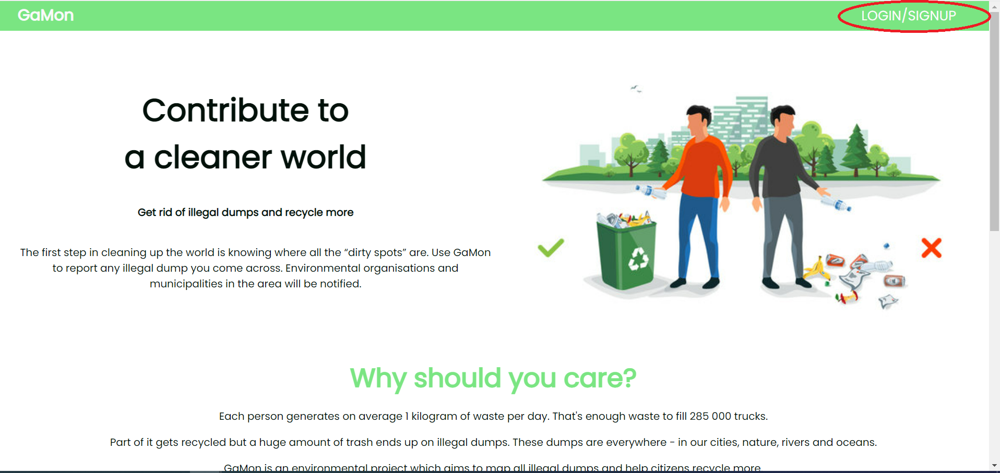

Cu toții suntem conștienți că reciclarea este importantă, deoarece reduce nevoia de exploatare a
Pământului
în vederea obținerii materiilor prime.
Însă, de multe ori, nu știm cum și unde să aruncăm în mod corect deșeurile.
Acest proiect vizează implementarea unei aplicații web care monitorizează aruncarea necorespunzătoare a
deșeurilor
și încurajează cetățenii să participe dinamic și constant la activități de salubrizare.
Scopul produsului
Aplicația GaMon își propune doi pași prin care să contribuie la curățarea planetei.
Primul pas este alcătuit din câteva etape simple, cum ar fi localizarea de către cetățeni a celor mai
apropiate centre de colectare selectivă,
raportarea zonelor în care există deșeuri aruncate incorect și solicitarea la domiciliu a unui tomberon.
Al doilea pas, curățarea propriu-zisă, constă în implicarea în evenimentele organizate de ONG-uri de
mediu și de administrația orașului.
Aplicația are o caracteristică deosebită - se folosește de un sistem de tip clasament, încercând astfel
să sensibilizeze utilizatorii
și să îi încurajeze să își crească nivelul de implicare.
Descriere generală
Funcționalitățile produsului
Crearea unui cont și autentificarea (C, PA)
Contul meu - vizualizarea și editarea detaliilor personale (C, PA)
Pins - localizarea pe hartă a zonelor în care există deșeuri (C, PA)
Vizualizarea statisticilor (C, PA)
Exportarea statisticilor
Vizualizarea și modificarea listei de raportări
Raportarea deșeurilor pe baza unor filtre (C, PA)
Vizualizarea centrelor de colectare selectivă (C, PA)
Adăugarea centrelor de colectare selectivă
Vizualizarea evenimentelor (C, PA)
Crearea evenimentelor
Deconectarea de la aplicație (C, PA)
Actori și roluri
Actor: cetățean
Rol: Dintre rolurile menționate anterior, cetățeanul le îndeplinește pe cele de la punctele 1, 2, 3, 4,
7, 8, 10, 12.
Actor: persoană autorizată
Rol: Persoana autorizată are acces la toate funcționalitățile produsului.
În continuare este prezentată diagrama use case a proiectului, care ilustrează fiecare actor și rolurile
pe care le îndeplinește.
Fig.1 - Diagramă use case
Flow-ul produsului
Clientul își creează un cont în aplicație, cu o adresă de email validă (care nu există deja în baza de
date). În cazul în care selectează Authorized person la tipul de cont, trebuie să introducă codul valid
al autorizației de care aparține. Dacă înregistrarea este finalizată cu succes, utilizatorul este
redirecționat către pagina de login.
Atunci când se loghează în aplicație, utilizatorului i se generează un token pe baza credențialelor
sale, iar acesta se salvează în tabelul sessions din baza de date. În cazul în care există deja în tabel
adresa de email a acestui utilzator, i se invaliează tokenul precedent și se actualizează cu cel nou.
Apoi este redirecționat către dashboard, iar în funcție de tipul contului său, are acces la mai multe
facilități.
Cetățenii pot raporta un deșeu completând câmpurile despre locație, dimensiune, tipul deșeului, tipul
cererii; pot crea un eveniment și pot participa la evenimentele existente; pot vedea detalii despre
centrele de colectare aflate în zona lor.
Persoanele autorizate au aceleași drepturi ca și cetățenii, iar în plus pot vedea și modifica o listă a
tuturor raportărilor, împărțită în funcție de tipul cererii. De asemenea, pot crea și șterge centre de
colectare și pot șterge evenimente.
Prezentarea arhitecturii de ansamblu
La nivel de componente, aplicația este alcătuită din server și client.
Serverul implementează un API rest care facilitează comunicarea cu clientul, prin intermediul metodelor
HTTP (GET, POST PUT, DELETE). API-ul rest analizează această comunicare și o împarte în module. În
funcție de URL-ul unei cereri, API-ul o redirecționează către unul dintre cele 4 controllere
responsabile de tratarea ei (utilizatori, deșeuri, evenimente, centre de colectare). Aceste controllere
implementează și ele o funcție de rutare și metode pentru afișarea, crearea, actualizarea și ștergerea
unei resurse. Controllerele apelează la modele, care realizează interogările în baza de date. Apoi,
trimit răspunsul către client.
Clientul este împărțit în model, view și controller. Modelul trimite cererea pentru toate resursele de
un anumit tip către server. Controllerul preia de la model informațiile respective și face la rândul său
alte cereri pentru cazuri particulare (de exemplu, inserarea tipurilor de gunoi ale unui centru de
colectare). De asemenea, controllerul modifică șablonul HTML cu informațiile primite de la server și îl
pune la dispoziție clientului.
Fig.2 - Diagramă C4
Mediu de operare
Aplicația va funcționa pe browserele Google Chrome, Mozilla Firefox, Opera și va fi independentă de
sistemele de operare.
Partea de back-end va fi implementată în Node.js.
Documentația utilizatorului
Crearea unui cont și autentificarea
De pe pagina principală, utilizatorul apasă butonul Login/Sign up și este redirecționat către
o pagină corespunzătoare.

Utilizatorul își creează un cont apăsând butonul Sign up: își introduce detaliile personale
(nume, prenume, adresă de email), alege o parolă și selectează un tip de cont (cetățean sau
persoană autorizată).
În cazul în care selectează persoană autorizată, este necesar să introducă și codul
organizației de care aparține.
Crearea contului se va realiza prin apăsarea butonului final Submit.
În eventualitatea în care utilizatorul are deja un cont, se autenifică
folosind doar adresa de email și parola.
Raportarea deșeurilor
Raportarea deșeurilor se va realiza prin apăsarea butonului Report dump vizibil din orice pagina
a aplicației.
Informațiile necesare completării sunt următoarele: tipurile deșeurilor, dimensiunea, locația
pe hartă, tipul request-ului și o imagine cu deșeurile.
Finalizarea raportării se realizează prin apăsarea butonului Report
aflat la finalul formularului de completare.
Vizualizarea centrelor de colectare
Orice utilizator are acces la o listă unde se pot găsi toate centrele de colectare
selectivă.
Accesarea butonului listei va afișa informații despre numele centrului, dimensiunea (clădire sau
container), locația și un
buton pentru detalii.
Butonul Details afișează informațiile de mai sus, și în plus detaliile de contact ale centrului
(dacă există), orele de lucru și
tipul deșeurilor colectate.
Vizualizarea evenimentelor
Orice uitilizator are acces la o listă cu titlurile evenimentelor.
Apăsarea pe butonul Details deschide
o pagină cu detaliile corespunzătoare - o scurtă descriere a evenimentului, data la care va avea
loc,
organizatorul, numărul de participanți înscriși, cantitatea de gunoi de curățat, locația
evenimentului
și butonul Attend.
Personal Autorizat
O persoană autorizată din cadrul unei organizații specializate în colectarea deșeurilor, se
înregistrează
cu ajutorul codului organizației de care aparține. Acesta are aceleași drepturi ca și un
utilizator obișnuit,
iar în plus are acces la baza de date ce conține toate înregistrările raportate, împărțite în
funcție de tipul
înregistrării (private requests sau public requests). Utilizatorul autorizat are posibilitatea
să șteargă înregistrările
necorespunzătoare din listă, sau le poate marca drept curățate, fapt ce determină dispariția lor
din listă.
Librării
pentru grafice se va utiliza chart.js
pentru exportarea PDF-urilor se va utiliza jsPDF
Caracteristicile aplicației
Crearea unui cont și autentificarea
De pe pagina principală, utilizatorul apasă butonul Login/Sign up și este redirecționat către
o pagină corespunzătoare.
Acesta își creează un cont (pagina Sign up): își introduce detaliile personale
(nume, prenume, adresă de email), alege o parolă și selectează un tip de cont (cetățean sau
persoană autorizată).
În cazul în care selectează persoană autorizată, este necesar să introducă și codul
organizației de care aparține.
În eventualitatea în care utilizatorul are deja un cont, se autenifică (pagina Login)
folosind doar adresa de email și parola.
Intrarea propriu-zisă în aplicație se face cu ajutorul butonului Submit, după completarea
datelor.
Contul meu - vizualizarea și editarea detaliilor personale
Utilizatorul își poate vedea statisticile personale (numărul de raportări și numărul de
evenimente la care a participat drept voluntar)
și nivelul curent calculat pe baza statisticilor. Pentru fiecare raportare și pentru fiecare
participare la o activitate de curățare,
acesta primește un anumit număr de puncte prin care își crește nivelul.
De asemenea, poate edita detaliile contului (nume, prenume, poză de profil, parolă).
Pins - localizarea pe hartă a zonelor în care există deșeuri
După autentificare, utilizatorului îi apare pagina de dashboard, unde există o hartă cu zonele în
care
au fost raportate anterior deșeuri, marcate cu ajutorul unor pin-uri.
Vizualizarea statisticilor
În dashboard se pot vizualiza, de asemenea, și statisticile referitoare la numărul total de
raportări, numărul total de zone curățate,
un grafic cu numărul de raportări în funcție de tipurile de deșeuri și încă unul cu cantitatea
de gunoi raportată pe unitate de timp
(zi, săptămână, lună).
Vizualizarea și modificarea listei de raportări
Personalul autorizat are acces la o listă cu toate înregistrările deșeurilor de pe hartă, care
conține informații despre
statusul, dimensiunea, locația deșeurilor și un buton pentru detalii.
Apăsarea butonului Details va deschide o pagină cu toate informațiile de mai sus, și în plus o
imagine cu deșeurile, tipul de gunoi
și un câmp cu informații adiționale.
Persoana autorizată poate bifa căsuța din dreptul unui item al listei pentru a avea acces la
opțiunile Delete și Mark as cleaned,
în funcție de statusul deșeurilor (au fost raportate incorect/curățate).
Exportarea statisticilor
La finalul listei de deșeuri, care apare doar în cazul personalului autorizat, există și un buton
de exportare a statisticilor
prevăzute în dashboard. Acestea pot fi descărcate în diverse formate - CSV, HTML, PDF.
Raportarea deșeurilor pe baza unor filtre
Apăsând butonul Report dump, orice utilizator poate accesa pagina de raportare a deșeurilor.
Informațiile necesare completării
sunt următoarele: tipurile deșeurilor, dimensiunea, locația pe hartă, informații adiționale și o
imagine cu deșeurile. Tot aici
există posibilitatea de a comanda un container la domiciliu, pentru deșeurile personale.
Vizualizarea centrelor de colectare selectivă
Orice utilizator are acces la o listă și la o hartă unde se pot găsi toate centrele de colectare
selectivă din zona respectivă.
Accesarea butonului listei va afișa informații despre numele centrului, dimensiunea (clădire sau
container), locația și un
buton pentru detalii.
Butonul Details afișează informațiile de mai sus, și în plus detaliile de contact ale centrului
(dacă există), orele de lucru și
tipul deșeurilor colectate.
Adăugarea centrelor de colectare selectivă
Personalul autorizat are în plus opțiunea de adăugare a unui centru de colectare.
Vizualizarea evenimentelor
Orice uitilizator are acces la o listă cu titlurile evenimentelor. Apăsarea pe un titlu deschide
o pagină cu detaliile corespunzătoare -
o scurtă descriere a evenimentului, data la care va avea loc, organizatorul, numărul de
participanți înscriși, cantitatea de gunoi
de curățat, locația evenimentului și butonul Attend.
Crearea evenimentelor
Suplimentar față de detaliile prezentate mai sus, personalul autorizat are butonul Create event,
care îi permite să înregistreze
următorul eveniment de acest tip.
Deconectarea de la aplicație
Butonul Sign out redirecționează utilizatorul către pagina principală.
Alte cerințe nefuncționale
Cerințe privind securitatea
Aplicația este protejată împotriva SQL injection datorită utilizării unui
query builder (knex) și totodată datorită faptului că nu se fac interogări direct cu datele din
input-uri.
Cum ar putea fi îmbunătățită aplicația
Pentru a aduce un plus aplicației și pentru a o îmbunătăți se pot implementa următoarele: validarea
email-ului,
anonymus logging, implementarea funcționalităților pentru hartă și dashboard, trimiterea comenzii pentru
curățare,
dependențele în funcție de oraș, implementarea aplicației mobile.